9:00-10:20 Normalization, clustering, and visualization
10:30-11:50 Finding markers and annotating cell types
12:00 - 1:00pm Lunch/Break
1:00-2:20 Trajectory inference methods
2:30-4:00 Dataset alignmnet and batch correction
Seurat accomplishes these steps using a succicnt set of functions:
NormalizeData()
ScaleData()
RunPCA()
RunUMAP()
FindNeighbors()
FindClusters()
FindMarkers()@counts <- raw data@data <- log normalized data (used for differential gene expression)@scale.data <- scaled/regressed data (used for clustering/visualization)@reductions <- contains tsne/pca/umap matrices@graphs <- contains KNN and SNN graphs used for clustering
library(Seurat)
library(tidyverse)
library(cowplot)
library(Matrix)
library(ComplexHeatmap)
so <- readRDS("data/filtered_sobj.rds")
so
#> An object of class Seurat
#> 12572 features across 2690 samples within 1 assay
#> Active assay: RNA (12572 features)Normalization of the UMI count data is necessary due to the large variability in total counts observed across cells. This variability is generally thought to be due to inefficiencies in library preparation and variable sequencing depths between cells. Without normalization the largest source of variabilty in the data would be due to technical differences rather than the biological differences of interest.
A commonly used approach for normalization of UMI data is a simple scaling normalization similar to the commonly used counts per million normalization methods. UMI counts per cell are scaled to the total # of UMIs per cell and multipled by a constant for ease to prevent small numbers (10,000). The data are then log transformed (wtih a pseudocount) to stabilize the variance. e.g.
\(\log((10000 * \frac{x_{i}}{\sum_{x_i}}) + 1)\)
This approach makes the assumption that cells all have the same amount of RNA and that sequencing depth is the reason for the variability. These assumptions aren’t really valid, especially when comparing diverse cell types, however in practice this approach can still provide reasonable results and is the default normalization method used in Seurat.
so <- NormalizeData(so, normalization.method = "LogNormalize")
# data slot now contains log normalized values
GetAssayData(so, "data")[1:10, 1:10]
#> 10 x 10 sparse Matrix of class "dgCMatrix"
#>
#> AL627309.1 . . . . . . . . . .
#> RP11-206L10.2 . . . . . . . . . .
#> LINC00115 . . . . . . . . . .
#> NOC2L . . . . . . . . 1.254193 .
#> KLHL17 . . . . . . . . . .
#> PLEKHN1 . . . . . . . . . .
#> HES4 . . . . . 1.766183 . . . .
#> ISG15 . . . . . 2.369960 . 1.679169 . 2.836986
#> AGRN . . . . . . . . . .
#> C1orf159 . . . . . . . . . .Normalization methods used in bulk RNA-seq data (e.g. DESeq2 size-factors ) are not appropriate due to the large numbers of zeros in the data. However, by pooling similar cells together, one can obtain enough data to estimate a normalization size factor. The Bioconductor package scran implements such a strategy.
The basic approach is as follows:
First we need to convert our seurat object to a Bioconductor single cell data structure, the SingleCellExperiment class. This class is similar to other bioconductor data strucutes (e.g. SummarizedExperiment). Seurat provides a conversion function to convert to an SingleCellExperiment object (and other formats, such as loom and CellDataSet).
library(scran)
# convert to SingleCellExperiment
sce <- as.SingleCellExperiment(so)
# get raw UMI counts
counts(sce)[40:50, 40:50]
#> 11 x 11 sparse Matrix of class "dgCMatrix"
#>
#> GNB1 . . . . . . . . . . .
#> PRKCZ . . . . . . . . . . .
#> RP5-892K4.1 . . . . . . . . . . .
#> C1orf86 . . . . . . . . . . .
#> SKI . . . . . . . . . . .
#> RER1 1 . 1 1 . . . . 3 . .
#> PEX10 . . . . . . . . . . .
#> PANK4 . . . . . . . . . . .
#> RP3-395M20.12 . . . . . . . . . . .
#> TNFRSF14 . . . . . 1 . . . . .
#> RP3-395M20.9 . . . . . . . . . . .
# get log Normalized counts form Seurat
logcounts(sce)[40:50, 40:50]
#> 11 x 11 sparse Matrix of class "dgCMatrix"
#>
#> GNB1 . . . . . . . .
#> PRKCZ . . . . . . . .
#> RP5-892K4.1 . . . . . . . .
#> C1orf86 . . . . . . . .
#> SKI . . . . . . . .
#> RER1 1.787605 . 1.527969 1.731479 . . . .
#> PEX10 . . . . . . . .
#> PANK4 . . . . . . . .
#> RP3-395M20.12 . . . . . . . .
#> TNFRSF14 . . . . . 1.732627 . .
#> RP3-395M20.9 . . . . . . . .
#>
#> GNB1 . . .
#> PRKCZ . . .
#> RP5-892K4.1 . . .
#> C1orf86 . . .
#> SKI . . .
#> RER1 2.711917 . .
#> PEX10 . . .
#> PANK4 . . .
#> RP3-395M20.12 . . .
#> TNFRSF14 . . .
#> RP3-395M20.9 . . .
#genes
rownames(sce)[1:5]
#> [1] "AL627309.1" "RP11-206L10.2" "LINC00115"
#> [4] "NOC2L" "KLHL17"
#cells
colnames(sce)[1:5]
#> [1] "AAACATACAACCAC-1" "AAACATTGAGCTAC-1" "AAACGCTGACCAGT-1"
#> [4] "AAACGCTGGTTCTT-1" "AAAGTTTGATCACG-1"
# get cell metadata
colData(sce)[1:5, ]
#> DataFrame with 5 rows and 5 columns
#> orig.ident nCount_RNA nFeature_RNA
#> <factor> <numeric> <integer>
#> AAACATACAACCAC-1 control 2419 779
#> AAACATTGAGCTAC-1 control 4901 1350
#> AAACGCTGACCAGT-1 control 2174 781
#> AAACGCTGGTTCTT-1 control 2259 789
#> AAAGTTTGATCACG-1 control 1265 441
#> percent_mito ident
#> <numeric> <factor>
#> AAACATACAACCAC-1 3.01777594047127 control
#> AAACATTGAGCTAC-1 3.79514384819425 control
#> AAACGCTGACCAGT-1 3.81784728610856 control
#> AAACGCTGGTTCTT-1 3.0987162461266 control
#> AAAGTTTGATCACG-1 3.47826086956522 control
# get gene metadata
rowData(sce)[1:5, ]
#> DataFrame with 5 rows and 0 columnsFirst we’ll cluster the cells. We’ll discuss clustering approachs more in depth later in the tutorial.
# takes a few minutes
clusters <- quickCluster(sce,
use.ranks = FALSE, # suggested by the authors
min.size = 100) # require at least 100 cells per cluster
table(clusters)
# Calculate size factors per cell
sce <- computeSumFactors(sce,
clusters = clusters,
min.mean = 0.1) # ignore low abundance genes
summary(sizeFactors(sce))
# apply size factors to generate log normalized data
sce <- normalize(sce)
logcounts(sce)[40:50, 40:50]Lastly, we’ll replace the Seurat normalized values with those from scran and store the size-factors in the meta.data
so[["RNA"]] <- SetAssayData(so[["RNA"]],
slot = "data",
new.data = logcounts(sce))
so$sizeFactors <- sizeFactors(sce)Now we that have normalized values we can visualize expression across groups.
VlnPlot(so, "CD3E", slot = "counts")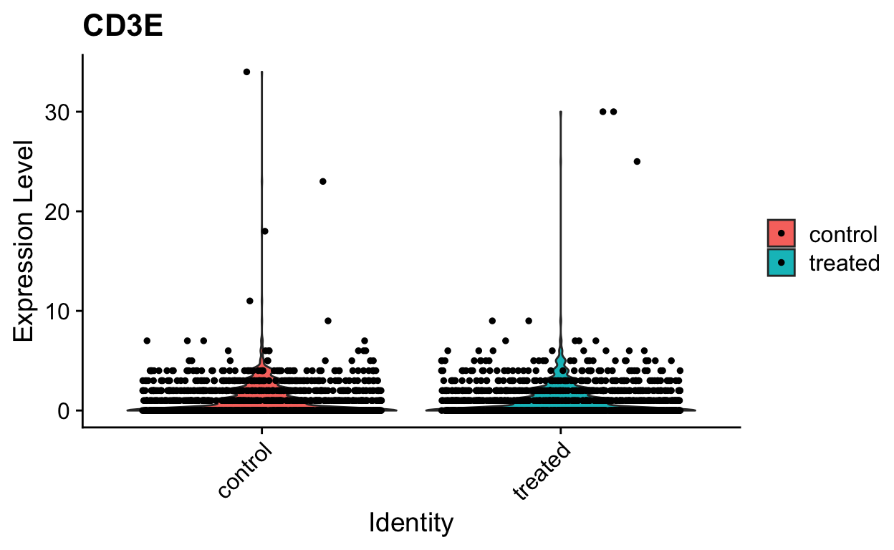
VlnPlot(so, "CD3E", slot = "data")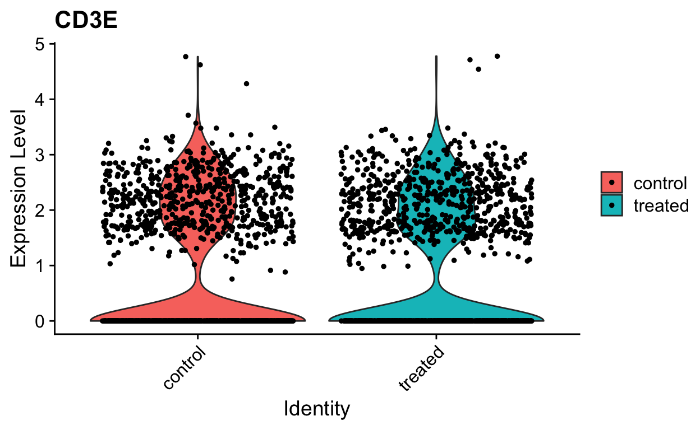
We will next select important features to use for dimensionality reduction, clustering and tSNE/uMAP projection. We can in theory use all ~20K genes in the dataset for these steps, however this is often computationally expensive and unneccesary. Most genes in a dataset are going to be expressed at relatively similar values across different cells, or are going to be so lowly expressed that they contribute more noise than signal to the analysis. For determining the relationships between cells in gene-expression space, we want to focus on gene expression differences that are driven primarily by biological variation rather than technical variation.
Seurat provides a function to help identify these genes, FindVariableGenes. Ranking genes by their variance alone will bias towards selecting highly expressed genes. To help mitigate this Seurat uses a vst method to identify genes. Briefly, a curve is fit to model the mean and variance for each gene in log space. Variances are then standardized against this model, and ranked. The top 2000 genes with the highest standardized variances are then called as highly variable, by default.
so <- FindVariableFeatures(so,selection.method = "vst")
VariableFeaturePlot(so) 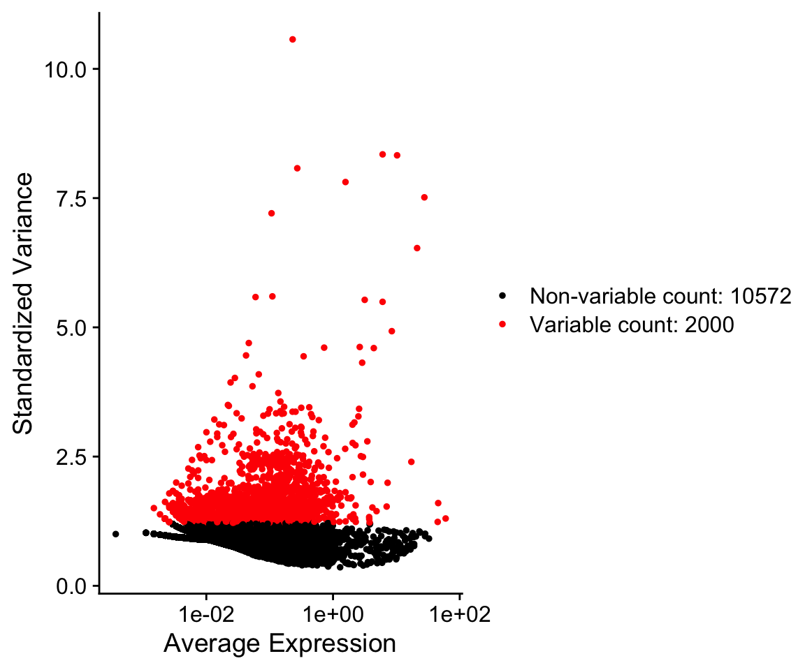
so@assays$RNA@var.features[1:10]
#> [1] "PPBP" "S100A9" "LYZ" "IGLL5" "GNLY" "FTL" "PF4"
#> [8] "FTH1" "FCER1A" "GNG11"An alternative approach uses the Bioconductor package M3Drop. This approach does not model the variance in the data, but rather uses the information about dropouts to identify genes that have high variance. Specifically there is a clear relationship between the dropout rate and the abundance of a gene.
counts <- GetAssayData(so, "counts")
# dropout rate per gene
dropout_rate <- 1 - (rowSums(counts > 0) / ncol(counts))
# mean expression
avg_abundance <- rowMeans(counts)
dropout <- data.frame(
abundance = avg_abundance,
dropout_rate = dropout_rate
)
ggplot(dropout, aes(abundance, dropout_rate)) +
geom_point() +
theme_cowplot() +
scale_x_log10() 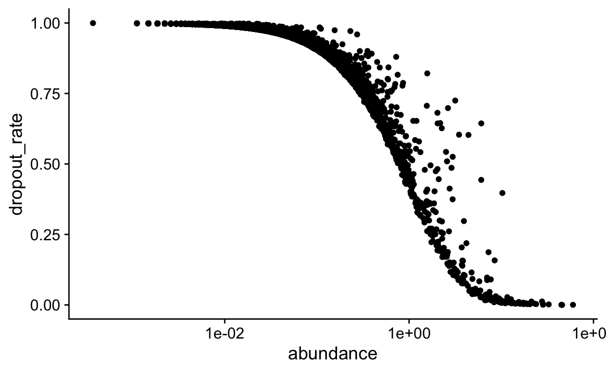
Note how some genes deviate to the right away from the main distribution. These genes have a higher dropout rate than expected for their abundance.
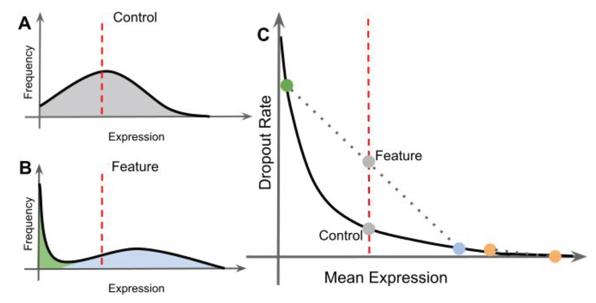
The dropout relationship is used to identify variable genes. If a gene is expressed at a different abundance in cell populations, then it will shift away from the curve. M3Drop uses two functions to fit the data to a model (NBumiFitModel), then find genes that deviate from the model (NBumiFeatureSelectionCombinedDrop).
library(M3Drop)
# input either SingleCellExperiment or counts slot from a Seurat object
counts <- NBumiConvertData(sce)
#> [1] "Removing 0 undetected genes."
# fit to model
fit <- NBumiFitModel(counts)
# Identify genes with high dropout rate for a given abundance
drop_hvg <- NBumiFeatureSelectionCombinedDrop(fit,
ntop = 2000,
suppress.plot=FALSE)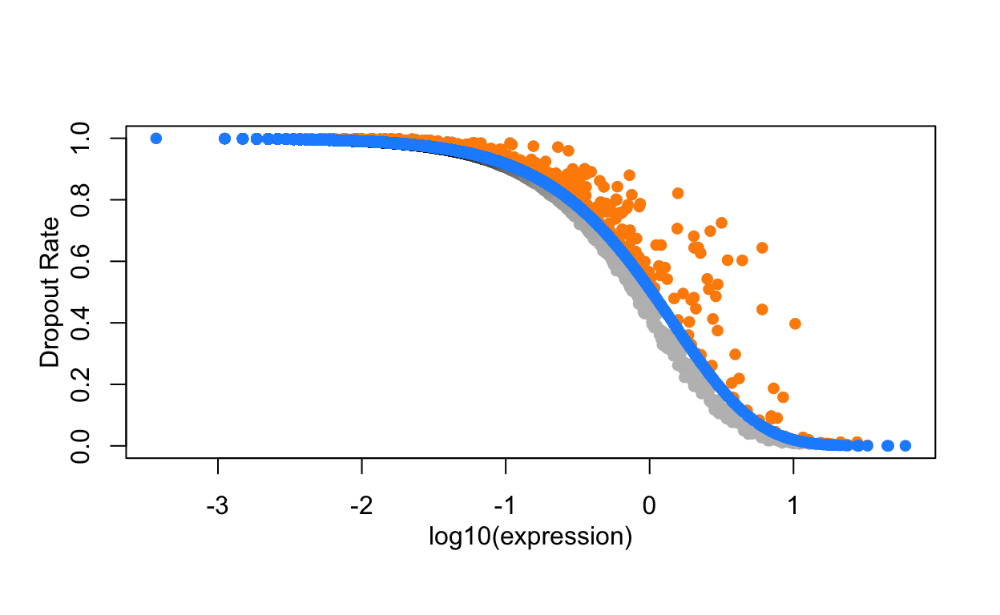
head(drop_hvg)
#> Gene effect_size p.value q.value
#> S100A9 S100A9 0.5800524 0 0
#> S100A8 S100A8 0.5409420 0 0
#> CST3 CST3 0.4892915 0 0
#> NKG7 NKG7 0.4686901 0 0
#> GNLY GNLY 0.4442870 0 0
#> TYROBP TYROBP 0.4419217 0 0How similar are the two appraoches?
shared_hvgs <- intersect(rownames(drop_hvg), VariableFeatures(so))
length(shared_hvgs)
#> [1] 1463
# set variable feature in seurat object
VariableFeatures(so) <- shared_hvgsDo these approaches really extract meaningful genes?
Exercise: Make a heatmap with the top 50 highly variable genes generated by Seurat and/or M3Drop.
library(ComplexHeatmap)
# pseudocode
Heatmap(input_matrix, show_column_names = FALSE)Next, we will scale the normalized expression values. The scaled values will only be used for dimensionality reduction and clustering, and not differential expression. The purpose of scaling is to set the expression values for each gene onto a similar numeric scale. This avoid issues of have a gene that is highly expressed being given more weight in clustering simply because it has larger numbers. Scaling converts the normalized data into z-scores by default and the values are stored in the scale.data slot.
Single cell data sets often contain various types of ‘uninteresting’ variation. These can include technical noise, batch effects and confounding biological variation (such as cell cycle stage). We can use modeling to regress these signals out of the analysis using ScaleData. Variables present in the meta.data can be supplied as variables to regress. A linear model is fit between the the supplied variables (i.e nUMI, proportion.mito, etc.) and gene expression value. The residuals from this model are then scaled instead of the normalized gene expression.
In general we recommend performing exploratory data analysis first without regressing any nuisance variables. Later, if you discover a nuisance variable (i.e. batch or cell cycle), then you can regress it out.
Note that some workflows( SimpleSingleCell and Current best practices for single cell analysis ) omit this scaling step, as it can upweight the contribution of noisy low-expressed genes. If you want to omit this step simply assign the log-normalized values into the scale.data slot for compatibility with downstream Seurat functionality.
# scale all of the data, useful if you want to make heatmaps later
so <- ScaleData(object = so, features = rownames(so))
# for large datasets, just scale the variable genes:
#so <- ScaleData(object = so,
# features = VariableFeatures(so))
# get scaled values for top 50 variable genes
to_plot <- GetAssayData(so, slot = "scale.data")[VariableFeatures(so)[1:50], ]
Heatmap(as.matrix(to_plot),
show_column_names = FALSE)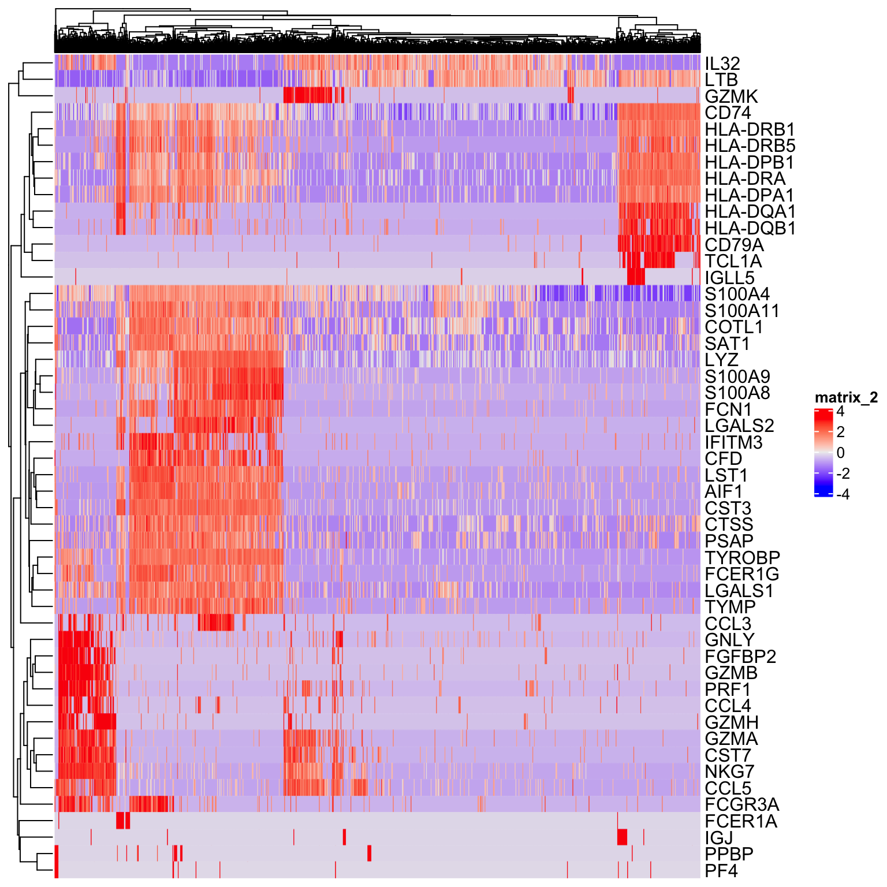
Heatmaps are useful for visualizing small numbers of genes (10s or 100s), but quickly become impractical for larger single cell datasets due to high dimensionality (1000s of cells X 20000 genes).
Dimensionality reduction techniques are used in single cell data analysis generally for two purposes:
Provide visualizations in 2 dimensions that convey information about relationships between cells.
Reduce the computational burden of working with 20K dimenions to a smaller set of dimensions that capture signal.
By identifying the highly variable genes we’ve already reduced the dimensions from 20K to ~1500. Next we will use Principal Component Analysis to identify a smaller subset of dimensions (10-100) that will be used for clustering and visualization.
so <- RunPCA(so,
features = VariableFeatures(so),
verbose = FALSE,
ndims.print = 0)
DimPlot(so, reduction = "pca")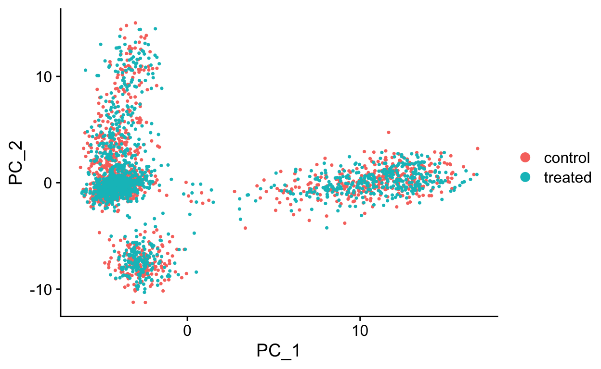
The RunPCA function will calculate the top 50 principal components using a modified form of PCA (see ?irlba) that doesn’t need to compute all of the PCs. By default it will also print the genes most highly associated with each principal component, we will visualize these later. Often these genes will be recognizable as markers of different cell populations and they are also often highly variable genes.
Note Some functions in Seurat (RunPCA, RunTSNE, RunUMAP, FindClusters), have a non-deterministic component that will give different results (usually slightly) each run due to a randomization step in the algorithm. However, you can set an integer seed to make the output reproducible. This is useful so that you get the same clustering results if you rerun your analysis code. In many functions seurat has done this for you with the seed.use parameter, set to 42. If you set this to NULL you will get a non-deterministic result.
Shown in the tabs are 2 dimensional plots showing the prinicpal component scores of cells.
pcs <- list(
c(1, 2),
c(1, 3),
c(1, 4),
c(2, 3),
c(2, 4),
c(3, 4)
)
for(i in seq_along(pcs)){
cat('\n#### ', 'PC', pcs[[i]][1], ' vs PC', pcs[[i]][2], '\n', sep = "")
p <- DimPlot(so,
dims = pcs[[i]],
reduction = "pca",
cols = RColorBrewer::brewer.pal(10, "Paired"))
print(p)
cat('\n')
}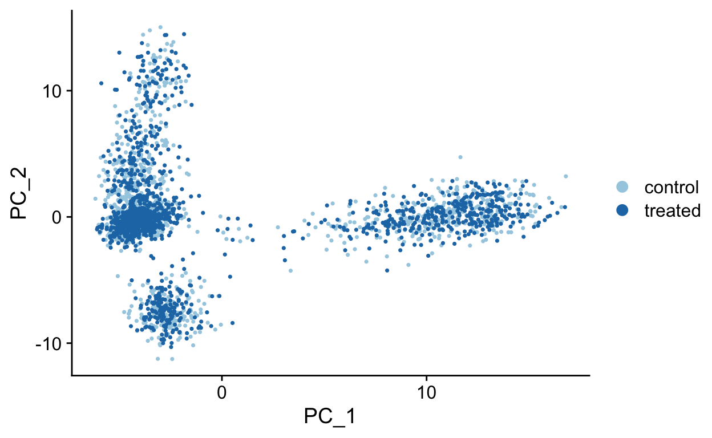
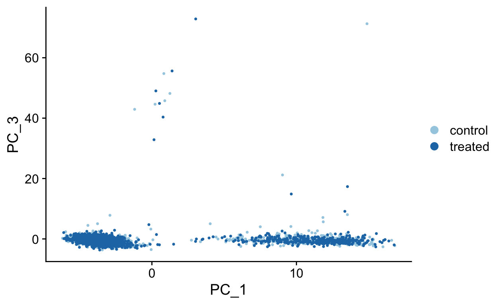
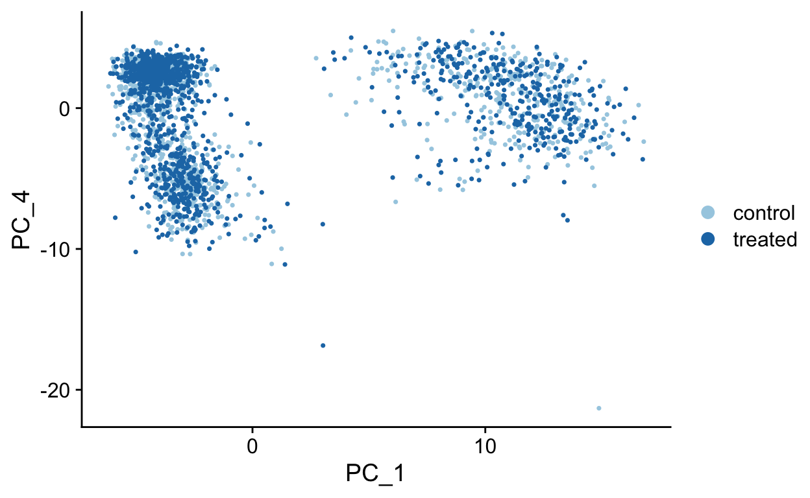
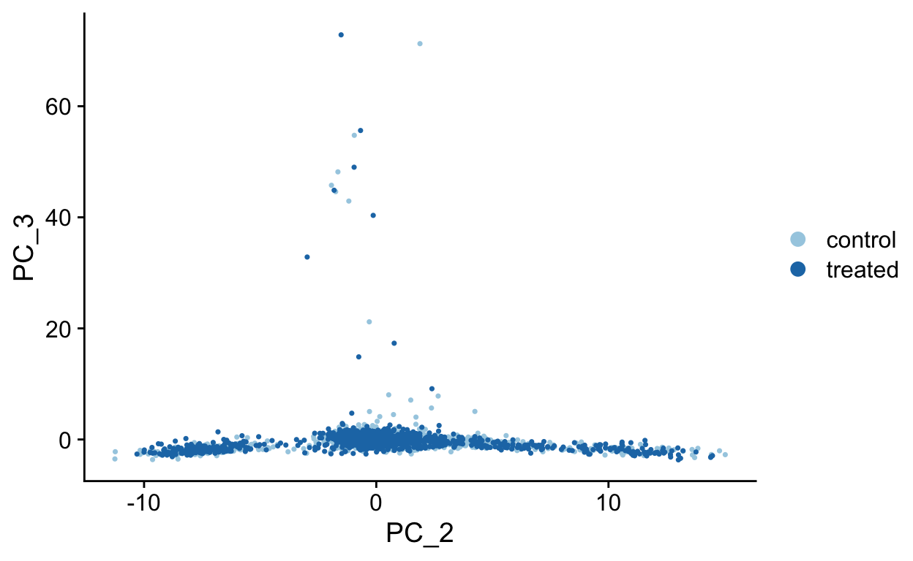
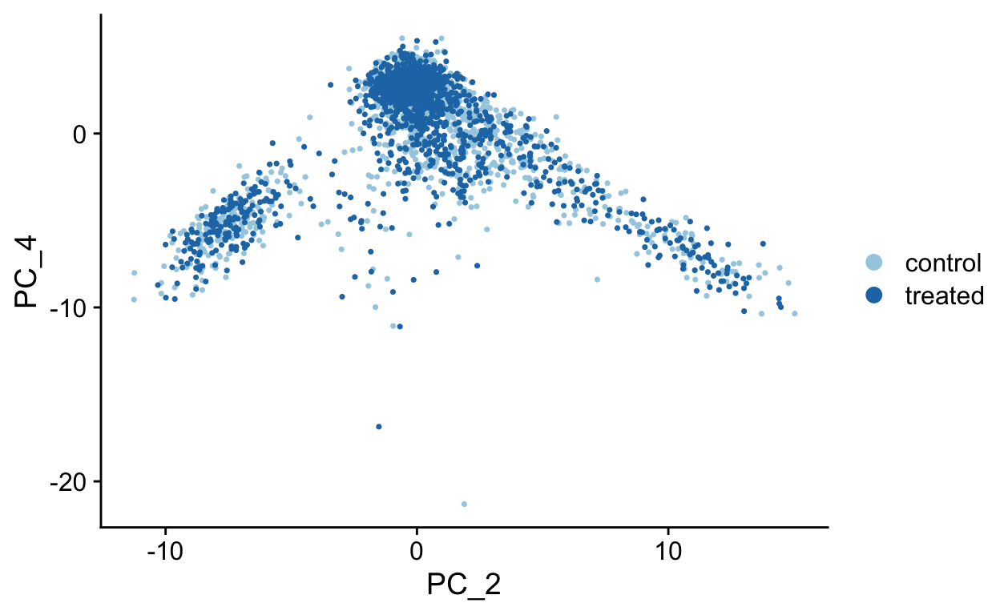
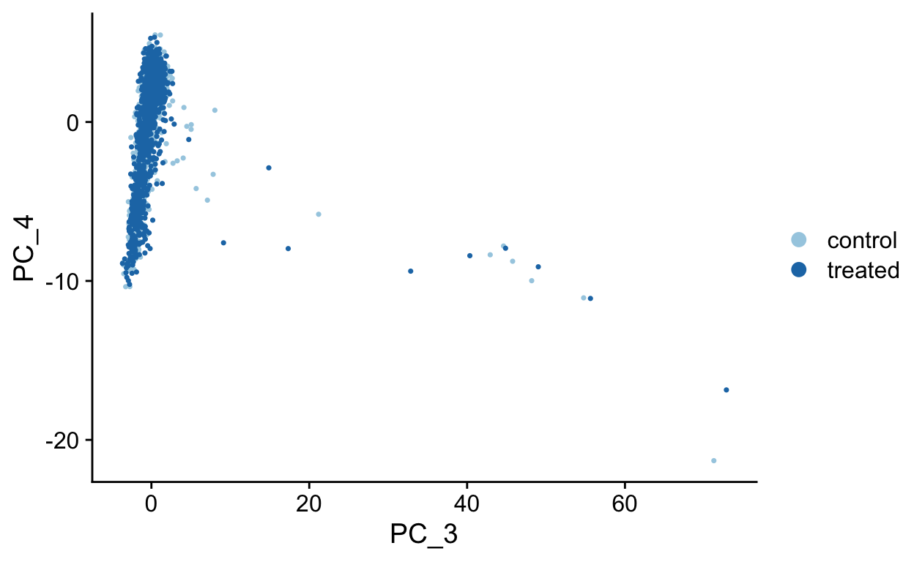
To see which genes are most strongly associated with the PCs you can use the VizDimLoadings function.
VizDimLoadings(object = so, dims = 1:3, balanced = TRUE, ncol = 3)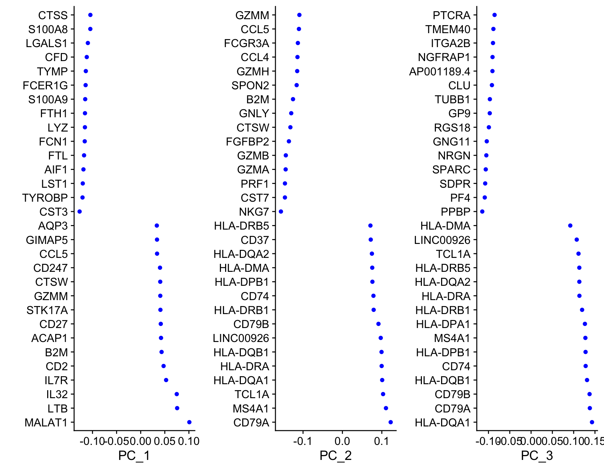
Finally, we can generate an ‘elbow plot’ of the standard deviation explained by each of the principle components.
ElbowPlot(so, ndims = 40)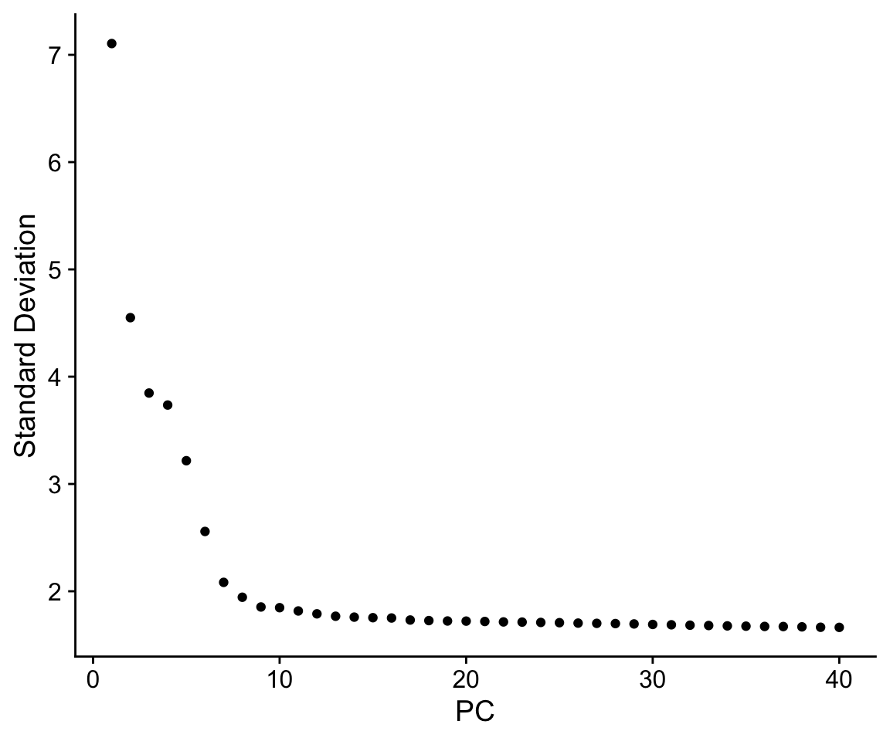
Note that most of the variation in the data is captured in a small number of PCs (< 20)
Early single cell studies simply used PCA to visualize single cell data, and by plotting the data in scatterplots reduced the dimensionality of the data to 2D. This is a fine approach for simple datasets, but often there is much more information present in higher principal components.
We can use PC1 and PC2 to begin to assess the structure of the dataset.
FeaturePlot(so,
c("nFeature_RNA", "nCount_RNA"),
reduction = "pca")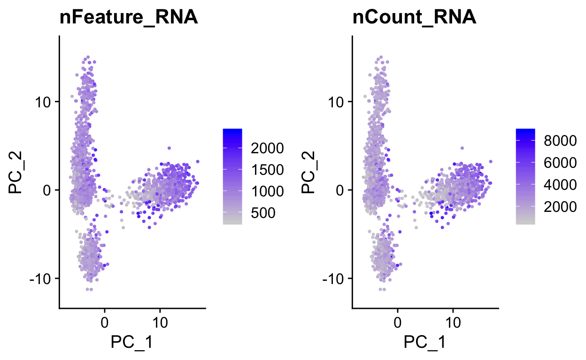
# Color by CD8, marker of CD8 t-cells
FeaturePlot(so,
"CD8A",
reduction = "pca")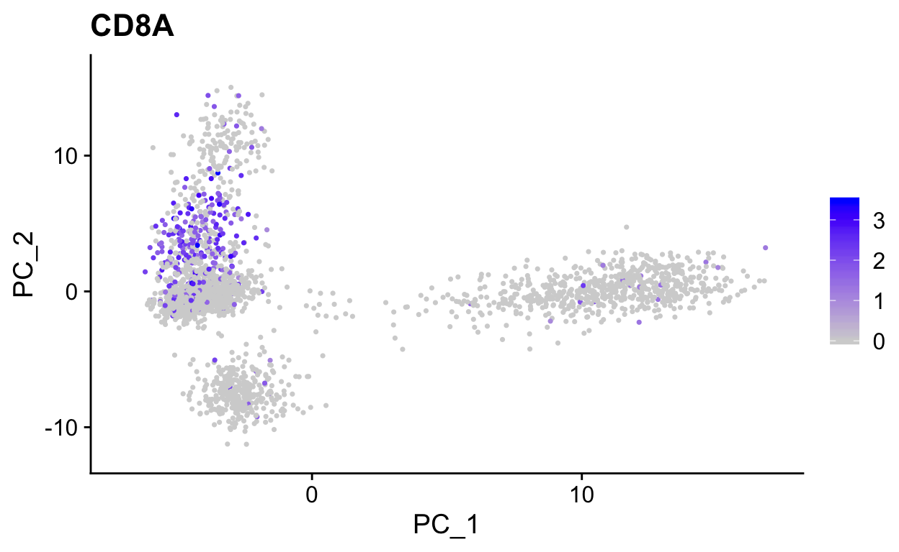
Use wrapper functions for plotting to save some typing.
plot_pca <- function(sobj, features, ...){
FeaturePlot(sobj,
features,
reduction = "pca",
...)
}
# Color by top genes associated with Pc1 and Pc2
plot_pca(so, c("CST3", "NKG7")) 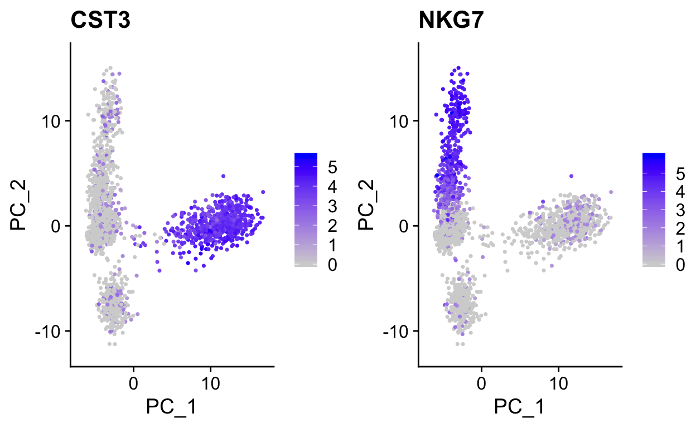
# or use ggplot directly if need more custom viz
var_df <- FetchData(so, c("PC_1", "PC_2", "CD19", "CD8A")) %>%
gather(gene, expr, -PC_1, -PC_2)
ggplot(var_df, aes(PC_1, PC_2)) +
geom_point(aes(color = expr)) +
scale_color_gradientn(colours = RColorBrewer::brewer.pal(9, "Reds")) +
facet_grid(~gene) +
theme_cowplot()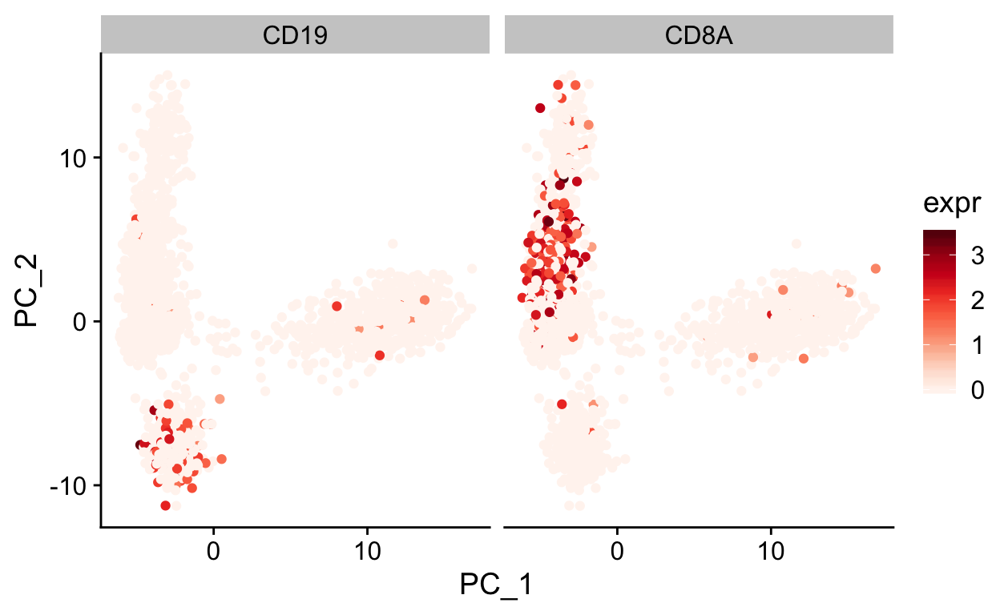
Note how other PCs separate different cell populations (PPBP is a marker of megakaryocytes).
plot_pca(so, c("PPBP", "NKG7"), dims = c(2,3))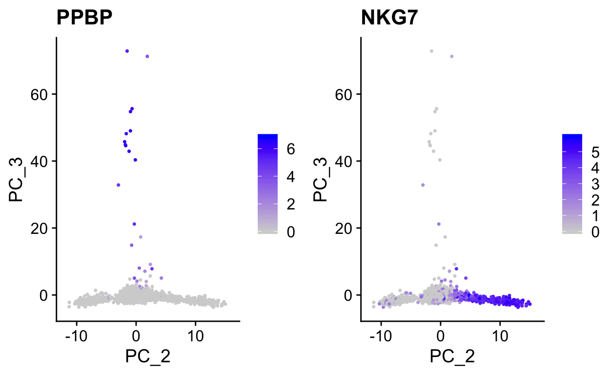
The first two dimensions of PCA are not sufficient to capture the variation in these data due to the complexity. However, PCA is useful in identifying a new set of dimensions (10-100) that capture most of the interesting variation in the data. This is useful because now with this reduced dataset we can use newer visualization technique to examine relationships between cells in 2 dimenions.
t-distributed stochastic neighbor embedding (tSNE) is a popular techinique for visualizing single cell datsets including mass cytometry data. A useful interactive tool to help you understand tSNE and interpret tSNE plots can be found here. A more in depth explanation can be found here.
Seurat provides a wrapper (RunTSNE) around the Rtsne package that generates the tSNE projection. By default RunTSNE uses the PCA matrix as input for Rtsne. The tSNE data will be stored in the so@reductions$tsne slot.
# specify to use the first 15 principal components
# takes less than a minute
so <- RunTSNE(so, dims = 1:15)
# again make wrapper to plot tsnes easily
plot_tsne <- function(sobj, features = "", ...){
FeaturePlot(sobj,
features,
reduction = "tsne",
...)
}
# use DimPlot for factors, use FeaturePlot for everything else
DimPlot(so, reduction = "tsne")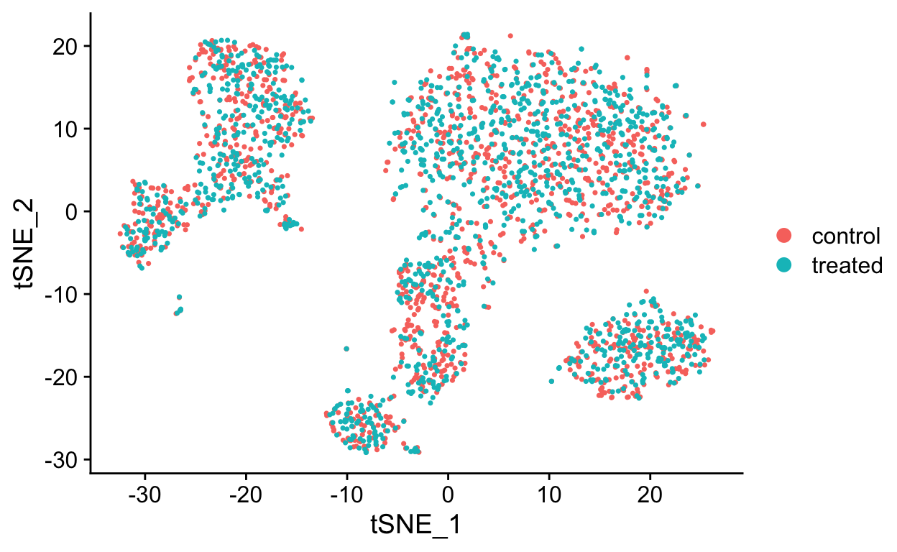
plot_tsne(so, c("CD3E", "PPBP", "CD79A", "S100A8"))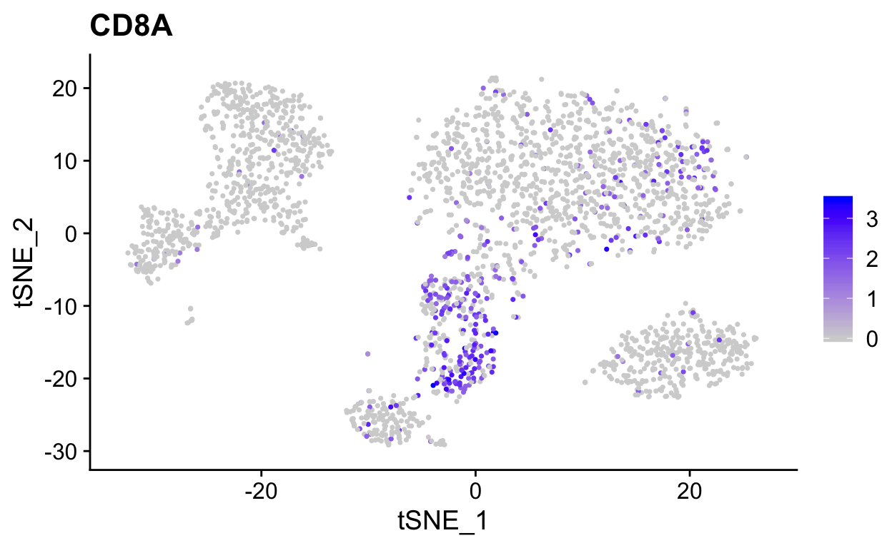
EXERCISE: What effect does including all genes and all PCs (at least 50 PCs) have on the tSNE projection? Do clusters seem separated similarly (look at CD3E, PPBP, CD79A, S100A8 expression)?
EXERCISE: The perplexity paramter is key to producing a good visualization. Generate tSNE plots at a range of perplexities (2, 25, 250). What do you notice about the projections?
UMAP is a newer algorithm for projecting data in 2D (or higher) and has become very popular for single cell visualization. The UMAP algorithm derives from topological methods for data analysis, and is nicely desribed by the authors in the UMAP documentation.
Similar to RunTSNE we specify the number of PCA dimensions to pass to RunUMAP.
# specify to use the first 15 prinicpal components
so <- RunUMAP(so, dims = 1:15)
DimPlot(so, reduction = "umap")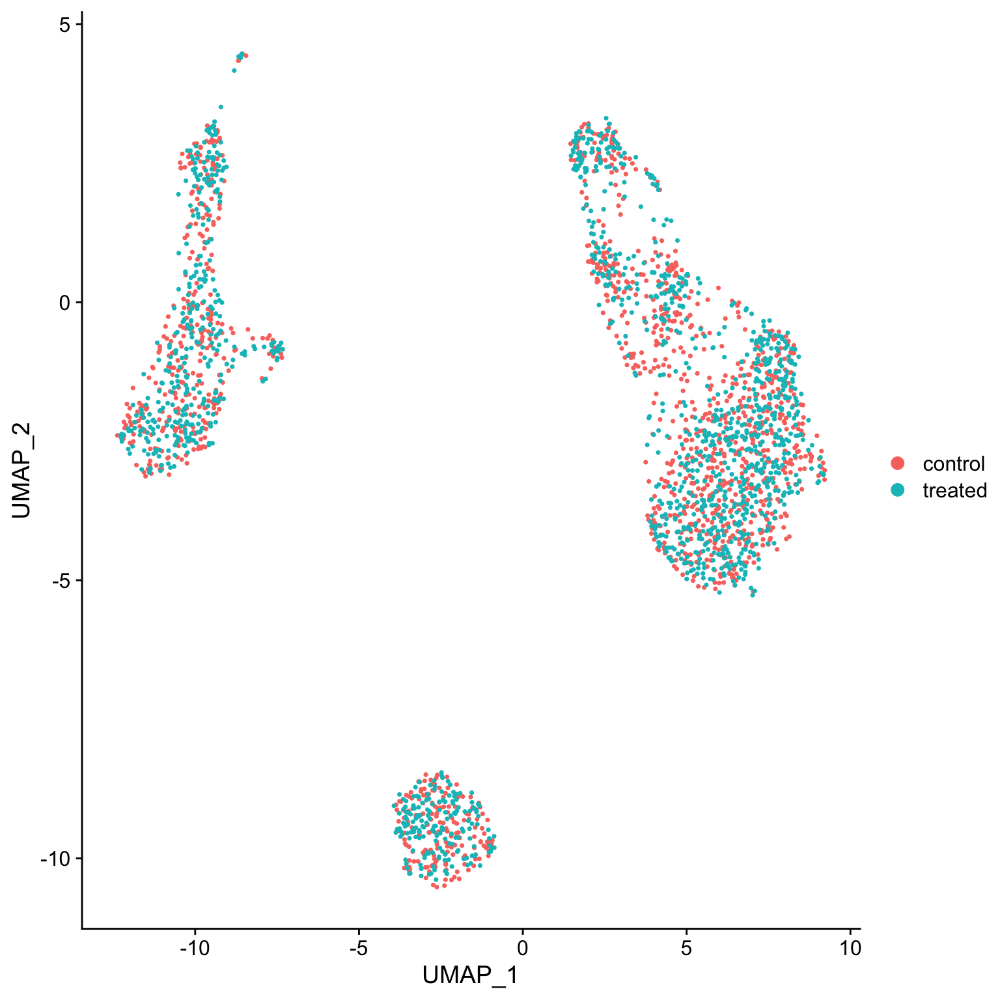
# again make wrapper to plot umaps easily
plot_umap <- function(sobj, features = "", ...){
FeaturePlot(sobj,
features,
reduction = "umap",
...)
}
plot_umap(so, c("CD3E", "PPBP", "CD79A", "S100A8"))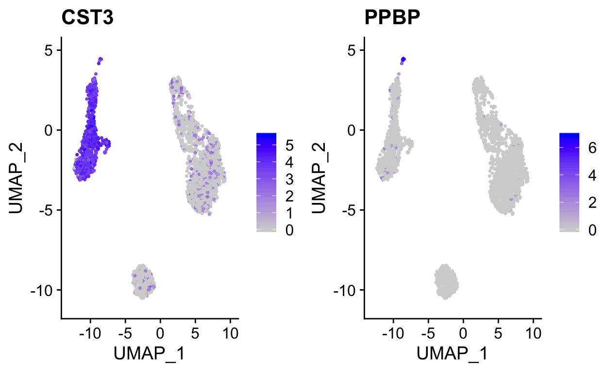
EXERCISE: How does the projection change with varying the min_dist parameter, try values 0.05, 0.3, and 0.7?
d <- c(0.05, 0.3, 0.7)
lapply(d,
function(x) {
RunUMAP(object = so,
n.neighbors = 30L,
min.dist= x,
dims = 1:20) %>%
DimPlot(., reduction = "umap")
}) %>%
plot_grid(plotlist = ., ncol = 3)destiny is an R package that implements diffusion maps for visualization and dimensionality reduction of single cell RNA-seq. This can be a very useful reduction method for datasets with more continuous dynamics.
library(destiny)
# expects matrix with cells as rows and genes as columns
input_data <- t(as.matrix(GetAssayData(so, "data"))[VariableFeatures(so), ])
df_map <- DiffusionMap(input_data)
palette(cube_helix(6))
plot(df_map, 1:2, col = so@meta.data$percent_mito)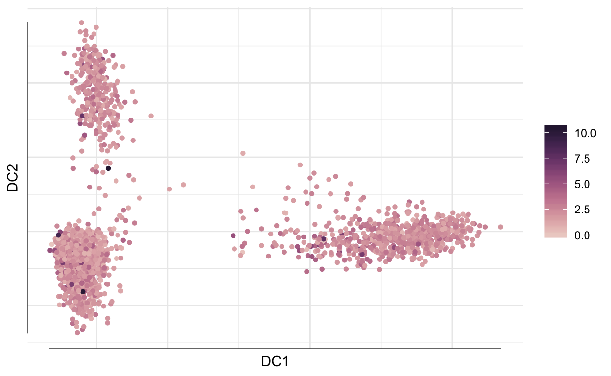
# See plotting options
#?plot.DiffusionMapLastly, another approach for visualization is to plot a nearest neighbor graph directly. There are various plotting approaches available to plot the graph in 2D. These visualizations will maximize the connectedness of the data. See ?layout_with_... functions from igraph. There are better tools for these types of visualizations in python (e.g. PAGA).
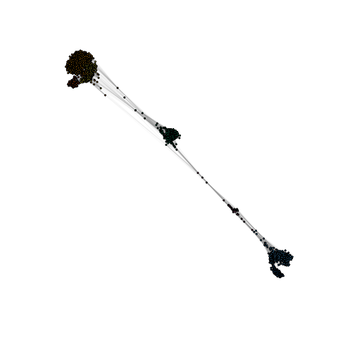
library(igraph)
net <- graph.adjacency(
adjmatrix = as.matrix(so@graphs$RNA_snn),
mode = "undirected",
weighted = TRUE,
diag = FALSE
)
lo <- layout_with_fr(net)
png("img/force_directed_graph.png")
plot.igraph(net,
layout = lo,
edge.width = E(net)$weight,
vertex.label = NA,
vertex.color = so$seurat_clusters,
vertex.size = 0,
curved = T)
dev.off()The PCA/UMAP/tSNE plots above indicate that there are likely different cell types present in the data as we can see clusters. Next we will formally cluster the dataset to assign cells to clusters. See this recent benchmarking paper for discussion of best clustering methods. Duo et al, 2018 A systematic performance evaluation of clustering methods for single-cell RNA-seq data
Graph based clustering methods are commonly used for single cell data, because they can scale to millions of cells, produce reasonable assignments, and have tunable parameters. The approach that is implemented in Seurat is performed as follows:
This general approach was originally adopted in the single cell community in the PhenoGraph algorithm developed by Levain et al 2015.
In Seurat the clustering is done using two functions:FindNeighbors which computes the KNN and SNN graphs, and FindClusters which finds clusters.
FindNeighbors calculates the KNN graph using the PCA matrix as input (or other dimensionality reductions).
so <- FindNeighbors(so,
reduction = "pca",
dims = 1:15,
k.param = 15)
so <- FindClusters(so, resolution = 0.5, verbose = FALSE)
so$RNA_snn_res.0.5 %>% head()
#> AAACATACAACCAC-1 AAACATTGAGCTAC-1 AAACGCTGACCAGT-1 AAACGCTGGTTCTT-1
#> 0 2 3 3
#> AAAGTTTGATCACG-1 AAATCATGACCACA-1
#> 2 5
#> Levels: 0 1 2 3 4 5 6 7
so$seurat_clusters %>% head()
#> AAACATACAACCAC-1 AAACATTGAGCTAC-1 AAACGCTGACCAGT-1 AAACGCTGGTTCTT-1
#> 0 2 3 3
#> AAAGTTTGATCACG-1 AAATCATGACCACA-1
#> 2 5
#> Levels: 0 1 2 3 4 5 6 7EXERCISE: Resolution and k.param are key parameters, what effect does varying them have on the clustering? Try a few resolution settings between 0.05 and 1 and k.param settings between 5 to 100.
Clustering algorithms produce clusters, even if there isn’t anything meaningfully different between cells. Determining the optimal number of clusters can be tricky and also dependent on the biological question.
Some guidelines:
Cluster the data into a small number of clusters to identify cell types, then recluster to generate additional clusters to define sub-populations of cell types.
To determine if the data is overclustered examine differentially expressed genes between clusters. If the clusters have few or no differentially expressed genes then the data is overclustered. Similar clusters can be merged post-hoc if necessary as sometimes it is difficult to use 1 clustering approach for many diverse cell populations.
Hierarchical clustering can be used to visualize the relationships between clusters. The average expression of each cluster is computed then the distances between the clusters are used for hierarchical clustering.
Idents(so) <- "RNA_snn_res.0.5"
so <- BuildClusterTree(so)
PlotClusterTree(so)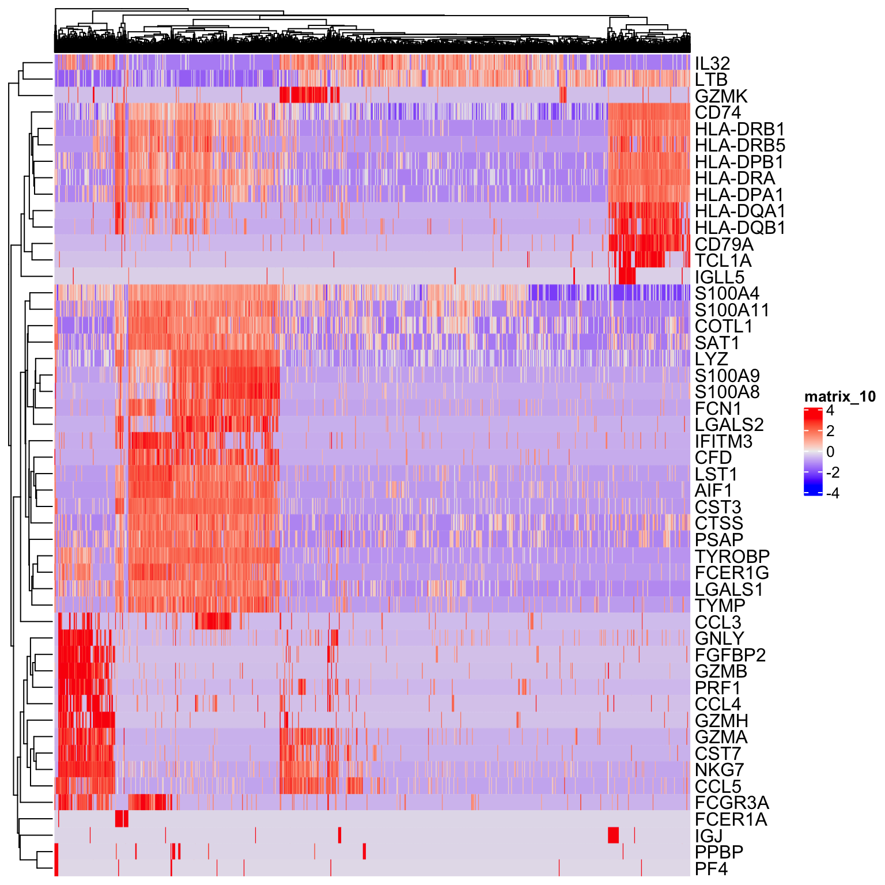
The clustree package provides a nice plotting utility to visualize the relationship of cells at different resolution settings.
library(clustree)
clustree(so)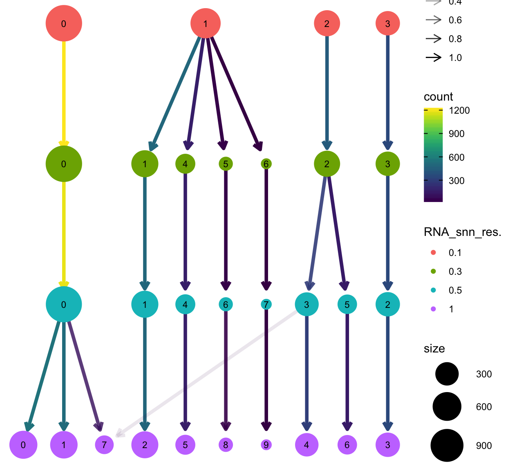
Finally let’s define a meta data column as clusters as those generated with a resolution of 0.5 with 30 neighbors.
so$clusters <- so$RNA_snn_res.0.5It’s always a good idea to store the cell metadata, particularly the clustering and projections, as these may change with reruns of the same data, for example if a package is updated or if the seed.use argument changes.
dir.create("data", showWarnings = FALSE)
saveRDS(so, "data/clustered_sobj.rds")
to_keep <- c(colnames(so@meta.data), "UMAP_1", "UMAP_2")
df_out <- FetchData(so, to_keep) %>%
rownames_to_column("cell")
out_name <- paste0("data/", Sys.Date(), "_cell_metadata.tsv.gz")
write_tsv(df_out, out_name)If you see mistakes or want to suggest changes, please create an issue on the source repository.